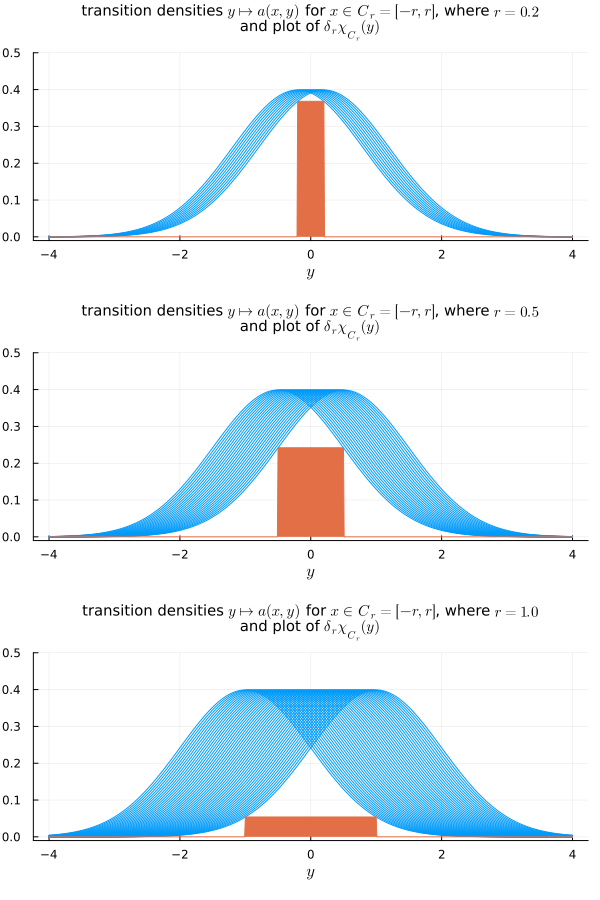

Convergence of the Metropolis-Hastings method
The convergences of the Metropolis-Hastings and Gibbs MCMC methods were proved in the early 1990's, in a number of articles, under reasonable assumptions. The rate of convergence, however, can be either sub-geometric or geometric, depending on the assumptions. These convergences are based on classical conditions of stability of Markov Chains. We will follow here the paper Mengersen & Tweedie (1996) and the second edition of the classic book Meyn & Tweeedie (2009) (the first edition Meyn & Tweeedie (1993) was published a few years before the article).
Fundamental Markov chain concepts
The fundamental result, for Markov chains, that we use here is the following
Let $(X_n)_n$ be a Markov chain with transition probability $A_n(x, E) = \mathbb{P}(X_n\in E | X_0 = x),$ where $E\subset \mathcal{X}$ is a Borel measurable set, on the event space $\mathcal{X}=\mathbb{R}^d,$ for some $d\in\mathbb{N}.$ Let $p=p(x)$ be a probability density function, with respect to the Lebesgue measure on $\mathcal{X},$ and suppose the Markov chain is $p$-irreducible and aperiodic. Then, for $p$-almost every initial condition $x\in \mathcal{X},$
\[ \|A_n(x, \cdot) - p\|_{\mathrm{TV}} \rightarrow 0, \quad n\rightarrow \infty,\]
where $\|\mu\|_{\mathrm{TV}} = \sup_{A\in\mathcal{B}(\mathcal{X})}|\mu(A)|$ is the total variation norm.
We need to clarify some terminology first.
Irreducibility
We start with the notion of ${\tilde P}$-irreducibility (see Section 4.2, page 82, of Meyn & Tweeedie (2009)).
A Markov chain $(X_n)_n$ with transition probability $A_n(x, \cdot)$ is called ${\tilde P}$-irreducible, with respect to a probability distribution ${\tilde P},$ if
\[ {\tilde P}(E) > 0 \Longrightarrow \sum_{n\in \mathbb{N}} A_n(x, E) > 0, \quad \forall x\in \mathcal{X}.\]
This is equivalent to assuming that, for all $x\in\mathcal{X}$ and all measurable set $E$ with ${\tilde P}(E) > 0,$ there exists $n(x, E)$ such that $A_n(x, E) > 0.$ The Markov chain is called strongly ${\tilde P}$-irreducible when $n(x, E) = 1$ for all such $x$ and $E.$
Irreducibility means that any measurable set with positive measure is eventually reached by the chain, with positive probability, starting from any point in $\mathcal{X}.$
The definition of irreversibility can be also be made with the notion of stopping time at a set.
Let $(X_n)_n$ be a Markov chain with transition probability $A_n(x, \cdot).$ Given a measurable set $E\subset \mathcal{X},$ the stopping time $\tau_E$ at $E$ of the Markov chain is defined as $\tau_E = \infty,$ if $\tau_E\notin E,$ for all $n\in\mathbb{N},$ or
\[ \tau_E = \inf\{n\in\mathbb{N}; \; X_n\in E\},\]
otherwise.
Thus, the chain is ${\tilde P}$-irreducible when ${\tilde P}(\tau_E < 0 | X_0 = x) > 0,$ for every $x$ and every ${\tilde P}(E) > 0.$
Recurrence
\[{\tilde P}\]
-Irreducibility implies that any set $E$ of positive ${\tilde P}$-measure is reached, at some step $n(x, E),$ from any point $x$ in space. A stronger property is that of recurrence, when the set is visited infinitely often.
A Markov chain $(X_n)_n$ with transition probability $A_n(x, \cdot)$ is called ${\tilde P}$-irreducible, with respect to a probability distribution ${\tilde P},$ if
\[ {\tilde P}(E) > 0 \Longrightarrow \sum_{n\in \mathbb{N}} A_n(x, E) > 0, \quad \forall x\in \mathcal{X}.\]
Small sets
For the aperiodicity, we need the concept of small set. (see Section 5.2, page 102, of Meyn & Tweeedie (2009)).
Let $(X_n)_n$ be a Markov chain with $n$-transition probability $A_n(x, \cdot).$ A set $C$ is called a small set if there exist $n\in\mathbb{N},$ $\delta > 0,$ and a probability measure $\nu$ such that
\[ A_n(x, E) \geq \delta\nu(E), \quad \forall x\in C, \;\forall E\in\mathcal{B}(E).\]
Equivalently, some authors take $\delta = 1$ and ask $\nu$ to be a nontrivial measure, without necessarily being normalized to a probability measure.
One motivation behind this notion is that, when $0<\delta < 1,$ we can write
\[ A_n(x, E) = \delta\nu(E) + (1-\delta)K_n(x, E), \quad \forall E\in\mathcal{B}(\mathcal{X}),\]
where $K_n(x, E) = (A_n(x, E) - \nu(E))/(1-\delta)$ is itself a probability distribution, and notice that the $n$-transition probability has a nontrivial portion $\nu$ that does not depend on the initial point $x.$ This allows us to get some uniform bounds.
The case $\delta > 1$ is not possible. Indeed, notice that the condition for being a small set means that
\[ \mu_n(x, E) = A_n(x, E) - \delta\nu(E) \geq 0, \]
which implies that the signed measure $\mu_n(x, \cdot)$ is nonnegative and, hence, is actually a measure. Notice then that
\[ 0 \leq \mu_n(x, E) \leq \mu_n(x, \mathbb{R}) = A_n(x, \mathbb{R}) - \delta\nu(\mathbb{R}) = 1 - \delta.\]
This means not only that $\delta \leq 1$ but also that, if $\delta = 1,$ then $\mu_n(x, E) = 0,$ for all $E,$ and hence $A_n(x, \cdot) = \delta\nu(\cdot).$
In summary, we must have $0 < \delta \leq 1.$ If $\delta = 1,$ then $A(x, E) = \delta \nu(E)$ is independent of $x$ on $C$. And if $0 < \delta < 1,$ $A(x, E) = \delta \nu(E) + (1-\delta)K_n(x, \cdot),$ so that there is at least a nontrivial part of $A(x,\cdot)$ that is independent of $x$ on $C.$ In any case, this allows us to obtain uniform lower bounds for the transition distribution.
But that does not give us much intuition to why it is called a small set, or in what sense that would be small. This can be illustrated with a few random walk examples.
A fair random walk
Consider the random walk (see e.g. Section 1.2.3 of Meyn & Tweeedie (2009))
\[ X_{n+1} = X_n + W_n, \qquad W_n \sim \mathcal{N}(0, 1),\]
on $\mathcal{X} = \mathbb{R}.$ If we take a set $C_r=[-r, r],$ where $r > 0,$ then, for each $x\in C,$ the PDF $\mathcal{N}(y; x, 1) = e^{-(x - y)^2/2}/\sqrt{2\pi},$ $y\in\mathbb{R},$ of the normal distribution $\mathcal{N}(x, 1)$ with mean $x$ and variance $1$ is such that
\[ \mathcal{N}(y; x, 1) \geq \mathcal{N}(2r; 0, 1) = \frac{1}{\sqrt{2\pi}}e^{-2r^2}, \quad \forall x\in C_r = [-r, r].\]
Thus, if we take $\nu_r$ to be the uniform distribution over $C_r,$ and noticing that the Lebesgue measure of $C_r$ is $2r$ and that $A(x, \cdot) = \mathcal{N}(x, 1)$ is the transition probability of this random walk, we have
\[ A(x, \cdot) \geq \delta_r \nu_r(\cdot), \quad \delta_r = \frac{2r}{\sqrt{2\pi}}e^{-r^2}.\]
More explicitly, we have, for any Borel set $E,$ and any $x\in C_r,$
\[ \begin{align*} A(x, E) & = \frac{1}{\sqrt{2\pi}}\int_{E} e^{-(x - y)^2/2} \;\mathrm{d}y \\ & \geq \frac{1}{\sqrt{2\pi}}\int_{E \cap C_r} e^{-(x - y)^2/2} \;\mathrm{d}y \\ & \geq \frac{1}{\sqrt{2\pi}}\int_{E \cap C_r} e^{-(2r)^2/2} \;\mathrm{d}y \\ & = \frac{1}{\sqrt{2\pi}} e^{-2r^2} \int_{E\cap C_r} \;\mathrm{d}y \\ & = \frac{2r}{\sqrt{2\pi}} e^{-2r^2} \frac{1}{2r}\int_{E\cap C_r} \;\mathrm{d}y \\ & = \delta_r \nu_r(E). \end{align*}\]
The value of $\delta_r$ has its maximum at $r = 1/2,$ with value $e^{-1/2}/\sqrt{2\pi} \approx 0.24,$ decreasing to zero either as we increase $r$ towards $\infty$ or decrease it towards zero. In a sense, $\delta_r\nu_r(\cdot)$ is small, regardless of $r > 0.$
Random walk on a half line
Now we consider the following random walk on the nonnegative half line.
\[ X_{n+1} = [X_n + W_n]^+, \qquad W_n \sim \mathcal{N}(0, 1),\]
where $[s]^+ = \max\{0, s\},$ for any real $s.$
Note that $X_n,$ $n=0, 1, 2, \ldot,$ can only assume nonnegative values, and that for any $x\geq 0,$
\[ \mathbb{P}(X_{n+1} = 0|X_n = x) = \int_{-\infty}^0 \frac{1}{\sqrt{2\pi}} e^{\frac{1}{2}|y - x|^2} = \frac{1}{\sqrt{2\pi}}\int_{-\infty}^{-x} e^{\frac{1}{2}s^2} \;\mathrm{d}s = F_{\mathcal{N}}(-x) > 0,\]
where $F_{\mathcal{N}}$ denotes the cumulative distribution function of the standard normal distribution.
Thus, if we take $\nu=\nu_0$ to be the delta distribution at $x=0,$ we see that the singleton $C=\{0\}$ and any interval $C=[0, r],$ $r > 0,$ is a small set for this random walk, since
\[ A(x, E) \geq F_{\mathcal{N}}(-x)\delta_0(E) \geq \delta\nu_0(E), \qquad \forall E\in\mathcal{B}(\mathbb{R}),\]
with $\delta = F_{\mathcal{N}}(-r).$
Aperiodicity
With the notion of small set, we have the definition of aperiodicity.
Let $(X_n)_n$ be a Markov chain with transition probability $A_n(x, \cdot).$ Then, the chain is called aperiodic when, for some small set $C$ with ${\tilde p}(C) > 0,$ the greatest common divisor of all the integers $n\in\mathbb{N}$ such that
\[ A_n(x, E) \geq \nu(E), \quad \forall x\in E, \;\forall E\in\mathcal{B}(E),\]
is $1.$
Metropolis-Hastings properties
With these definitions in mind and with the results above, we check that the Metropolis-Hastings chain is $p$-irreducible and aperiodic and, thus, it convergences, in total variation, to the desired distribution $p,$ when $n\rightarrow \infty.$
Further concepts and properties
References
- K. L. Mengersen, R. L. Tweedie (1996), "Rates of convergence of the Hastings and Metropolis algorithms," The Annals of Statistics, 24, no. 1, 101-121
- S. P. Meyn, R. L. Tweeedie (1993), "Markov Chains and Stochastic Stability," vol. 1, Springer-Verlag
- S. P. Meyn, R. L. Tweeedie (2009), "Markov Chains and Stochastic Stability," vol. 2, Cambridge University Press